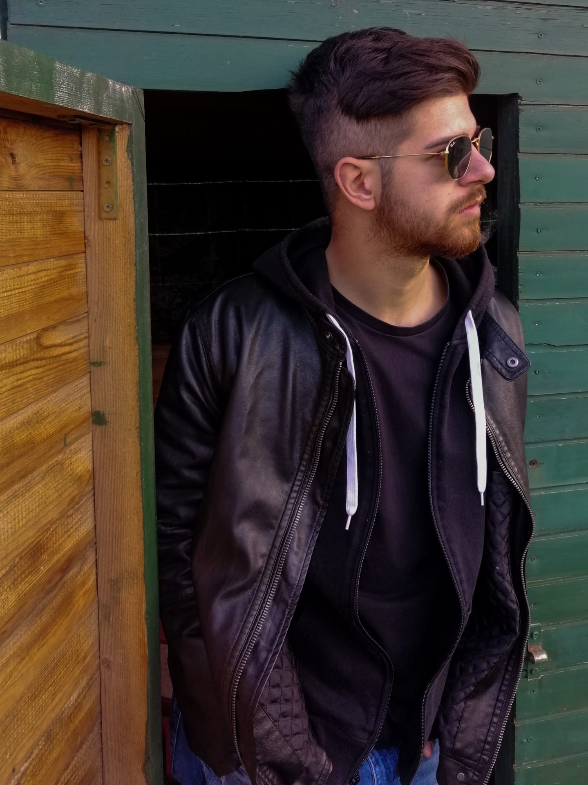

 Ciao! Sono Gabriele Ho 21 anni, e abito in un piccolo paesino di periferia vicino a Perugia. Mi reputo un ragazzo onesto e rispettoso nei confronti di tutte le persone, penso che bisogna sempre essere in buoni rapporti con tutti coloro che ci si sta a contatto sia in ambito lavorativo, sia nella vita privata. Cerco sempre di essere il più puntuale possibile al lavoro e nella consegna dei lavori, magari posso arrivare con qualche giorno di ritardo alla consegna di un lavoro, ma sicuramente ne vale la pena, perchè sarà un ottimo lavoro. Sono molto curioso e amo scoprire e imparare giornalmente nuove cose, per far si di stare sempre al passo con il mondo, ma più che altro è una soddisfazione personale per me imparare nuove cose. In tutto ciò che faccio mi prendo sempre le mie responsabilità, e molte volte amo fallire, perchè ogni volta che cado mi rialzo subito a testa alta, pronto a crescere dai miei errori, per migliorare. Amo il mondo dell'abbigliamento e tutto ciò che lo circonda. Le miei due passioni principali sono l'allenamento, che mi aiuta ad essere libero mentalmente e che mi motiva ogni giorno a fare meglio. L'altra mia passione che mi porto avanti fin dalla tenera età è quella della ricerca del tartufo nei boschi del territorio Umbro. Amo sia la città, ma anche allo stesso tempo i colori e i rumori della natura.